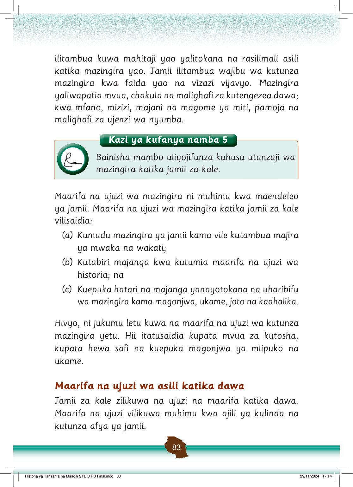

Kazi ya kufanya namba 6
Waulize wazazi au walezi kuhusu dawa tunazotumia wakati tunapopata magonjwa na orodhesha dawa hizo.
Idadi kubwa ya watu katika jamii hutumia dawa ili kulinda na kurudisha afya njema.
Kama ilivyo kwa jamii za sasa, jamii za kale zilitumia dawa kutibu magonjwa mbalimbali, ingawa kuna tofauti kati ya dawa zinazotumika sasa na zile zilizotumika katika jamii za kale katika kulinda afya na kutibu magonjwa.
Tofauti hizi zipo katika maarifa na ujuzi uliopo katika utengenezaji na matumizi ya dawa husika.
Utengenezaji wa dawa za kisasa hutegemea maarifa na ujuzi wa viwanda.
Angalia mfano wa dawa za kisasa katika Kielelezo namba 10.
Vidonge na kapsuli za dawa za kisasa zikiwa kwenye vifungashio mbalimbali.
Kielelezo namba 10: Dawa za Kisasa
Utayarishaji wa dawa za asili ulihusisha maarifa na ujuzi wa asili.
Vitu asilia kama vile miti, majani, magome ya miti, mizizi na maua vilitumika kutengeneza dawa za asili.
Historia ya Tanzania na Maadili STD 3 PB Final.indd 84
29/11/2024 17:15